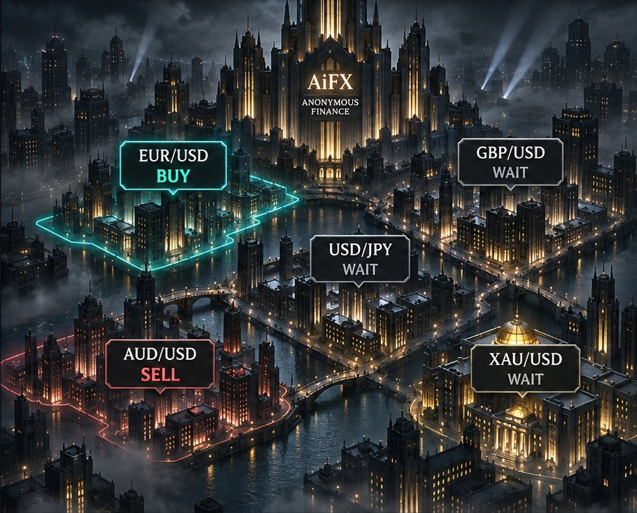

AiFX
시장 신호가 언제 켜지고 사라지는지 한 화면에서 따라가는 Windows 관제 프로그램.
TOMYFU / SOFTWARE PORTFOLIO
의류 제조 현장에서 주문을 관리하며 화면과 데이터의 흐름을 익혔습니다. 지금은 AI와 함께 Windows 프로그램, 웹 대시보드, 실시간 알림 도구를 기획하고 구현합니다.
프로젝트 살펴보기 ↓
SELECTED PROJECTS
시장 신호가 언제 켜지고 사라지는지 한 화면에서 따라가는 Windows 관제 프로그램.
MT5에서 들어오는 시세와 거래 기록을 회원용 대시보드와 운영자 화면으로 연결한 웹서비스.
엑셀 발주서와 사내 주문대장의 수량이 다를 때 원본을 대조하는 의류 제조용 업무 화면.
금 거래 전략을 MT5용 제품으로 구현하고 구매자가 직접 테스트할 수 있는 설정 가이드까지 공개한 작업.
경제지표 발표 일정을 한국어로 묶어 필요한 시점에 텔레그램으로 보내는 알림 도구.
 CROCEYE
CROCEYE플랫폼을 소개하는 Private Wealth와 EA를 소개하는 EA Shop으로 방문 목적을 나눠 구성한 웹 작업.
무대의상과 다품종 소량 제작을 문의하려는 고객을 위한 의류 제조사 홈페이지 기획.
차트를 바꿔 가며 확인하던 스토캐스틱 흐름을 한 패널에서 비교하는 MT5 보조지표.
WORK LOG
버전 연구와 서비스 기획까지
각 작업이 도달한 단계입니다.
돈키안 채널과 눌림목 조건을 EA로 구성하고 설정값과 실행 파일을 묶었습니다.
거래 상태, 진입 제한, 포지션 보호, 판정 로그의 변경을 버전별로 기록한 일련의 실험입니다.
EA별 성과와 종목 적합도를 확인하는 관리자 화면을 구성했습니다. 추천과 승인 후 배정하는 흐름도 기획했습니다.
EA·템플릿·차트 설정을 한 번에 설치하고, 사용자가 자동매매를 직접 켜도록 초기 설정 흐름을 설계했습니다.
팀의 활동 영상과 의상 사례를 소개하는 페이지를 구상하고, 댄서 프로필·팀원 모집·대회 신청을 포함한 플랫폼 범위를 정의했습니다.
초기 규칙형 프로그램 제작 경험입니다. 세부 기능과 공개 시연 자료는 보존된 기록에서 확인되지 않았습니다.